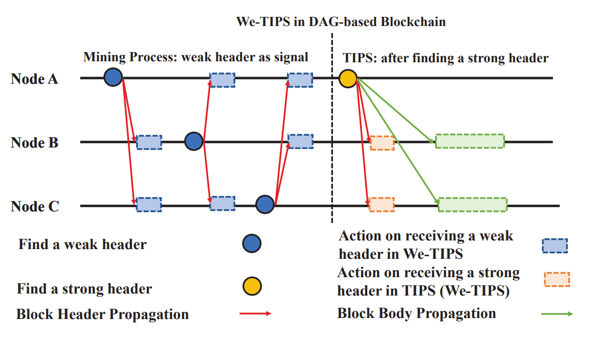
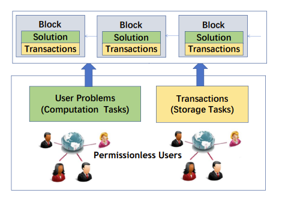

Canhui Chen (陈灿辉)
 |
Master student, |
About Me
I received my bachelor degree in Software Engineering from School of Data and Computer Science, Sun Yat-Sen (Zhongshan) University, Guangzhou, China (with a rank of 1/174 during my undergraduate study). I am a master student majored in Computer Sciences in Institute for Interdisciplinary Information Sciences(IIIS), Tsinghua University.
Education
B.S. degree, Sun Yat-Sen (Zhongshan) University, 2017 - 2021
majored in Software Engineering from School of Data and Computer Science (ranked 1/174)
Yat-Sen Class in Yat-sen Honor College, an elite liberal undergraduate institution of SYSU
Master student, Tsinghua University, 2021 - Present
majored in Computer Sciences in Institute for Interdisciplinary Information Sciences(IIIS)
Research Interests
I have a wide range of interests in game theory, mechanism design, multi-agent systems, distributed system and blockchain systems. And my research style is interdisciplinary in general. Particularly, I am leveraging mechanism design, mathematics optimization, economics analysis, algorithms design, system evaluation and implementation to tackle the multi-agent systems, blockchain systems and game related problems. I will be very happy if you want to discuss these interdisciplinary fields with me. I am always enthusiastic to investigate different research topics. :)
Publications
|  | Canhui Chen and Zhixuan Fang, “We-TIPS: Weak-Block-Based Transaction Inclusion Protocol with Signaling in DAG-based Blockchain,” the 21th International Symposium on Modeling and Optimization in Mobile, Ad hoc, and Wireless Networks (WiOpt), August 2023. (Best Paper Candidate)
|
Canhui Chen and Zhixuan Fang, “Gacha Game Analysis and Design,” Proceedings of the ACM SIGMETRICS (ACM SIGMETRICS), June 2023. (The idea of this work came to me while I was playing Genshin Impact. I am a loyal Genshin Impact player :D )
|
|  | Canhui Chen*, Zerui Cheng*, Shutong Qu, Zhixuan Fang, “Crowdsourcing Work as Mining: A Decentralized Computation and Storage Paradigm,” the 7th Asia-Pacific Workshop on Networking (APNet’23), June 2023, (Poster). (* denotes the equal contributions)
|
 |
Canhui Chen, Xu Chen, Zhixuan Fang, “TIPS: Transaction Inclusion Protocol with Signaling in DAG-Based Blockchain,” IEEE Journal on Selected Areas in Communications (JSAC). 2022.
|
 |
Jiayuan Liu*, Canhui Chen*, Lulu Zhou, Zhixuan Fang, “Real-Time Recursive Routing in Payment Channel Network: A Bidding-based Design,” Proceedings of the 20th International Symposium on Modeling and Optimization in Mobile, Ad Hoc and Wireless Networks (WiOpt’22). 2022. (* denotes the equal contributions)
|
 |
Canhui Chen, Qian Ma, Xu Chen, Jianwei Huang, “User Distributions in Shard-based Blockchain Network: Queueing Modeling, Game Analysis, and Protocol Design,” Proceedings of the Twenty-second International Symposium on Theory, Algorithmic Foundations, and Protocol Design for Mobile Networks and Mobile Computing (MobiHoc’21). 2021.
|
 |
Canhui Chen, Xu Chen, Jiangshan Yu, Weigang Wu, Di Wu, “Impact of Temporary Fork on the Evolution of Mining Pools in Blockchain Network: A Modeling Analysis,” IEEE Transactions on Network Science and Engineering (TNSE), 2020.
|
 |
Canhui Chen, Yihong Ling, Deyang Zhang, Nini Shi, Yunong Zhang, “Noisy Zhang-Dynamics (ZD) Method for Genesio Chaotic (GC) System Synchronization: Elegant Analyses and Unequal-Parameter Extension,” Proceedings of IEEE Symposium Series on Computational Intelligence (SSCI), 2019.
|
 |
Jianzhen Xiao*, Canhui Chen*, Yunong Zhang, “Continuous ZND (Zhang Neural Dynamics) Model for Generalized Sinkhorn Scaling of Time-Varying Matrix,” IEEE 11th International Conference on Intelligent Control and Information Processing (ICICIP), 2021. (* denotes the equal contributions)
|
Selected Awards
China National Scholarship, by Ministry of Education of China, 2023
Excellent Social Practice Scholarship, by Tsinghua University, 2023
China National Scholarship, by Ministry of Education of China, 2020
China National Scholarship, by Ministry of Education of China, 2019
First Prize of SYSU Outstanding Student Scholarship, by Sun Yat-Sen University, 2019 & 2020
Li Xuerou Foundation Scholarship, by Li Xuerou Foundation, 2020 (only 12 recipients in SYSU expect the School of Management, the only one in School of Data and Computer Science, SYSU)
Guangdong Song Qingling Scholarship, by Guangdong Song Qingling Foundation, 2016
Professional Activities
Technical Reviewer
IEEE Journal on Selected Areas in Communications (JSAC)
Frontiers of Computer Science (FCS)
The 16th International Conference on Wireless Algorithms, Systems, and Applications (WASA 2021)
Teaching Assistant
Game Theory, Institute for Interdisciplinary Information Sciences (IIIS), Tsinghua